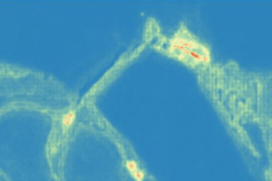
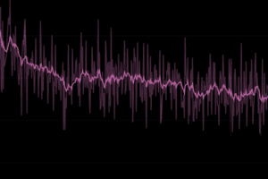

We care about alignment, uncertainty, and operational readiness.
For multimodal EO and canopy-structure systems, useful evaluation starts with spatial integrity and ends with an inference or export path your team can actually run. Generic benchmark talk is not enough.
 Validation evidence
Validation evidence
 Input alignment
Input alignment

Reviewable outputs Operational fit
Operational fit
What we verify before calling a model useful
The evaluation protocol is defined at kickoff and kept explicit. We focus on the failure modes that actually break geospatial systems in practice.
Spatial integrity
Check coordinate-system handling, tiling strategy, pixel alignment, missing coverage, and mask propagation before trusting any headline score.
Generative behavior
Review whether outputs are spatially coherent, diverse enough to reflect uncertainty, and stable under repeated inference instead of collapsing to a single brittle answer.
Operational readiness
Confirm that checkpoints, config snapshots, validation logs, and export scripts are sufficient for reruns, audits, and internal handover.
What improvement looks like in practice
These outcomes are generalized from current internal workstreams and describe the kind of technical lift we aim for without exposing NDA-covered project details.
Recover missing or lower-quality layers from the sensor mix your team already has, reducing dependence on perfect data availability.

Generate multiple plausible canopy or related structure rasters from the same optical scene so uncertainty stays visible and reviewable.

Keep config, checkpoint, and validation evidence tied together so research decisions survive beyond a single exploratory run.

Move from notebook-only outputs to named input and output contracts, tiling rules, and exportable artifacts that fit an operational workflow.